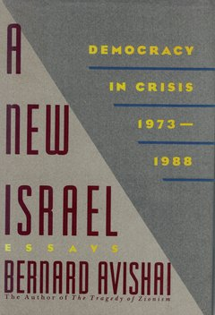
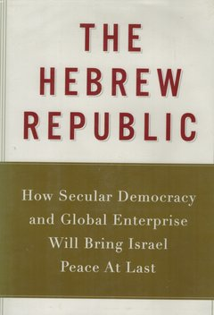

Essays, reporting, reviews and blog posts, arranged by year and by place of publication. Each entry links to the original where it is still online, to an archived PDF where one exists, and to the blog post that accompanied it. Blog posts that simply reposted a published piece appear as a link on that piece.
“Bernard Avishai ventures where few so far have had the courage or insight to go.”— Amos Elon
Books

